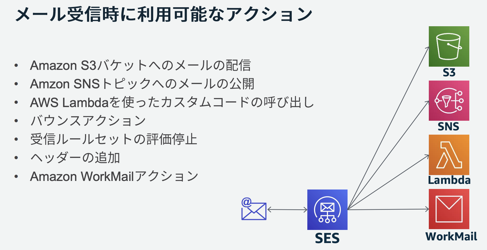
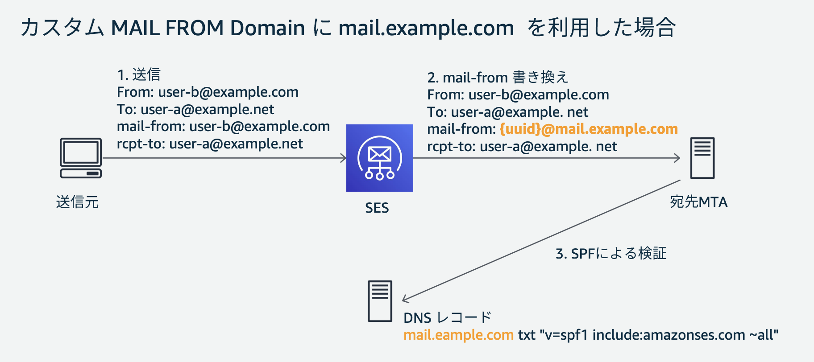

16. SES¶
SES(Simple Email Service)は、コスト効率の高いメールサービス。 取得済みドメインについて、認証を行うことで取得済みドメインのメールについて送信および受信機能が可能。
16.1. SESのメール受信¶
所有しているドメインに対するメールについて、受信を行うメールサーバーとして利用が可能。 注意点として、一般的なメールボックスが用意されているわけではなく、S3への配信やLambdaによる処理を行う。
 AWS Black Belt Online Seminar SES
16.1.1. 受信ルール¶
SESでは、受信したメールについての条件設定や特定の処理設定を行うことができる。 受信ルールは受信ルールセットとしてまとめられる。
具体的には、以下のような設定が可能
送信元アドレスの条件設定
メールヘッダの内容
これらの条件に応じて、S3への配信やLambdaでの後続処理の実行などの設定が行われる。
16.1.2. 受信制約¶
SESには受信ルールとは別にIPアドレスフィルター機能が存在し、特定のIPからのメール受信を拒否することができる。
16.1.3. 受信用DNS設定¶
16.1.3.1. 利用ドメインの検証（TXTレコード）¶
独自のドメインを経由してメールの受信を行う場合、利用するドメインの所有者であることをSESに認識させる必要がある。 SESのコンソール上で利用するドメインを登録すると、登録するべきランダムな値が提示されるので、ドメイン側のTXTレコードとして、その値を設定する。
ホスト名（Name）: _amazonses.example.com
種類（Type）: TXT
値（Value）: SESが指定したランダムな文字列（例: `abcdef1234567890xyz=`）
TTL: 3600（またはデフォルト）
上記を設定して数時間でSESのコンソール側でドメインが認証されるので、認証後はTXTレコードを削除して良い。
16.1.3.2. 受信メール設定（MXレコード）¶
ドメイン宛のメールをSESに転送するため、MXレコードをDNS側に設定する。
値については、リージョンごとに固定となっている。この設定から分かる通り、ドメインレベルでSESへの転送を行う。
仕組みとしては、@example.com宛のメールについてはSESへの転送を行い、検証を行なっているSESへの配信を行う。
ホスト名（Name）: example.com
種類（Type）: MX
値（Value）: 10 inbound-smtp.us-east-1.amazonaws.com
TTL: 3600
16.2. SESのメール送信¶
SESを利用したメール送信方法には大きく3つの種類が存在。
インターフェース |
概要 |
特徴 |
|---|---|---|
SESコンソール |
AWSマネジメントコンソールで直接メール送信をテストできる |
GUIで簡単に操作可能。設定の確認やテスト送信に便利 |
SES API |
アプリケーションから直接メールを送信するためのAPIを提供 |
IAMで送信権限を設定する必要がある |
｜---SendEmail API |
From、To、Subject、Body を指定してメールを送信 |
シンプルなテキストメールやHTMLメールの送信が可能 |
｜---SendRawEmail API |
メッセージ全体をアプリケーションで生成し、カスタムヘッダーや添付ファイルを含めて送信 |
より高度なメール構成が可能 |
SMTP インターフェース |
SESが準備しているSMTPエンドポイントが経由でメールを送信 |
認証情報（SMTPクレデンシャル）が必要 |
16.2.1. アクセスレベル¶
SESにはアクセスレベルが設定されており、アカウントの初期状態の「サンドボックス」と「プロダクション」状態がある。 AWSアカウントでSESを初めて利用する場合、不正利用を防ぐためSES機能は初期状態でサンドボックス状態となっている。 サンドボックス状態ではメール送信の宛先に制約がある他、メールの送信のスロットリングに制約が設けられる。
サンドボックスで要件を満たすことができない場合は、AWSサポート経由で上限緩和申請を行いプロダクションへ変更する必要がある。
制約項目 |
サンドボックス (初期状態) |
上限緩和後 (プロダクション) |
備考 |
|---|---|---|---|
送信対象 |
検証済みメールアドレス/ドメインのみ |
制限なし (任意の宛先に送信可能) |
初期状態ではテスト用途に限定される |
24時間あたりの送信可能メール数 (Sending Quota) |
200通 |
AWSサポート申請で引き上げ可能 |
引き上げ後の上限はリージョンや使用状況による |
1秒あたりの送信可能メール数 (Sending Rate) |
1通/秒 |
AWSサポート申請で引き上げ可能 |
高速な大量送信が必要な場合は申請が必要 |
バウンス・苦情率 |
厳しく制限 |
過剰なバウンス・苦情があると制限 |
SESの信頼性維持のため、適切なリスト管理が必要 |
承認プロセス |
なし (デフォルト) |
上限緩和申請が必要 |
AWS サポートに申請して解除 |
16.2.2. メール送信の制限¶
SESでは、送受信制限が設定されている。 これは、SES自体がスパム判定されてしまうと、配信先のメールプロバイダーとの信頼関係が崩れてしまうためである。 具体的には、24時間帯の送信可能メールや1秒あたりの送信可能メール数に制約が設けられている
16.2.3. SESのモニタリング¶
送信制限の監視するため、SESではメールに対して以下のようなメトリクスを取得し監視することができる。
メトリクス名 |
説明 |
活用用途 |
|---|---|---|
Send (送信数) |
SESが送信リクエストを受け付けたメールの数 |
送信ボリュームの監視 |
Reject (拒否数) |
SESがポリシー違反やブラックリスト登録などの理由で送信を拒否した数 |
不正な送信リクエストの監視、送信ポリシーの調整 |
Bounce (バウンス数) |
送信したメールが受信者のメールサーバーに拒否された数 |
配信リストのクリーンアップ、信頼性向上 |
Complaint (苦情数) |
受信者が迷惑メール報告を行った数 |
メール品質の改善、リスト管理 |
Delivery (配信数) |
正常に受信者に配信されたメールの数 |
送信成功率の分析 |
Open (開封数) (new) |
受信者がメールを開封した回数 |
メールのエンゲージメント測定 |
Click (クリック数) (new) |
メール内のリンクがクリックされた回数 |
コンテンツの有効性分析 |
Rendering Failure (レンダリング失敗数) (new) |
テンプレートのエラーなどによりメールが正常に生成されなかった回数 |
メールテンプレートの検証、エラー防止 |
16.2.4. バウンス¶
送信した際に、アドレスが存在しなかったり、受信拒否されている場合そのアドレスはハードバウンスとして扱われる。 ハードバウンスしたアドレスはSESで自動的にSuppression List(抑制リスト)に登録し、そのアドレスへのメール送信を抑制する。
16.2.5. 送信用DNS設定¶
16.2.5.1. メール送信の信頼性担保¶
メール送信においてなりすましを防ぐための設定として、SPF・DKIM・DMARCといった技術が用いられる。
SPF(Sender Policy Framework)
DKIM(Domain Keys Identified Mail)
DMARC(Domain-based Message Authentication Reporting and Conformance)
メールでは、送信元を偽造することは比較的容易に可能。なりすましや改ざんにも対応する必要がある。 この問題に対して、ドメイン側で「自分のアドレスから送信して良いサーバーはこれだけです」と受信者に伝えたり、改ざん対策のための技術がSPF・DKIM・DMARC。
16.2.5.1.1. 送信の信頼性を高めるSPF¶
エンベロープFROMの送信元の偽造を防ぐための技術。
そもそもメールには、送信元のヘッダーFROMとメールサーバーが付与するエンベロープFROMが設定されており、エンベロープFROMのメールアドレスのドメインをメールFROMドメインと呼ぶ。
メールを送信する際には、メールサーバーが自分(メールサーバー)のIPとエンベロープFROMを設定する。
SPFでは、DNS側で、「このメールFROMドメインを送信して良いメールサーバーのIP」を公開しておく。
SPFにより、メールのメールFROMドメインと送信メールサーバーIPが一致しているかを確認し、正しいメールサーバーからメールが送信されているかを検証できる。
注意点として、SPFではメールFROMドメインについての検証しかできないため、偽装されやすいヘッダーFROMの検証ができない。 これについては、後述するDMARCにより、ヘッダーFROMのドメインとメールFROMドメインの一致を検証する機能まで設定が必要。
SESを利用する場合、デフォルトでメールFROMドメインは、amazonses.comが設定される。
"amazonses.com"についてのSPFはAWS側で設定されているため、SPFについては自動で認証される。
一方で、受信側でヘッダーFROMのドメインのSPFの認証を行う可能性もある。
そのため、以下のように送信で利用するメールアドレスについて、SPFを設定することは推奨。
Name（ホスト名）: example.com
Type: TXT
Value: "v=spf1 include:amazonses.com -all"
"include:amazonses.com"：SESを許可
"-all"：SES以外を拒否
16.2.5.1.2. 送信の信頼性を高めるDKIM¶
電子証明を利用して、「メールは自分が送信した」ということを証明する DKIMを設定することで、受信時にメールの信頼度が上がるため、スパム判定されにくくなる。
具体的には、送信時に秘密鍵で署名を付与し、DNSに設定された公開鍵を利用して署名を検証する。 公開鍵のアドレスをCNAMEとして３レコード設定する
Name: randomstring1._domainkey.example.com
Type: CNAME
Value: randomstring1.dkim.amazonses.com
16.2.5.1.3. 送信の信頼性を高めるDMARC¶
特定のドメインからのメールに対して、「このように認証されているはず」「認証されてない場合はこのように扱って」ということが定義されている。
DMARCでは、SPFとDKIMについて認証が成功しているかと、ドメインの整合性のチェックを行う。
整合性チェックとは、FROMアドレスとエンベロープアドレスが一致しているかの検証が実施できる。
SESで言えば前述の通り、メールFROMドメインがデフォルトでamazonses.comとなるため、DMARCでヘッダーFROMとエンベロープFROMが一致している整合性チェックを有効化するためにはカスタムメールドメイン機能（後述）が必要。※ただし、SESではカスタムメールドメインを利用してもSPFで厳密な整合性は利用できない。
DMARCの設定をTXTレコードとして公開する
Name（ホスト名）: _dmarc.example.com
Type: TXT
Value: "v=DMARC1; p=quarantine; rua=mailto:reports@example.com; adkim=r; aspf=r"
"p=quarantine"：DMARCポリシーの設定で、認証失敗したメールの扱いを定義できる
ポリシー |
内容 |
|---|---|
p=none |
失敗しても許可（まずは様子を見るモード） |
p=quarantine |
失敗したら迷惑メールに入れるよう依頼 |
p=reject |
失敗したら完全拒否するよう依頼 |
"rua=mailto:reports@example.com"：DMARCポリシーで認証失敗した状況の定期レポートの送信先メールアドレス
"adkim=r"：DKIMの整合性チェックのレベルの設定
オプション値 |
意味 |
整合条件 |
使われる場面 |
|---|---|---|---|
r（relaxed） |
緩やかな整合性 |
From: のドメインと DKIMの d= が同一またはサブドメイン |
デフォルト。通常の運用に適している |
s（strict） |
厳密な整合性 |
From: のドメインと DKIMの d= が完全一致 |
より強固なドメイン整合性を求める場合 |
"aspf=r"：SPFの整合性チェックのレベルの設定
オプション値 |
意味 |
整合条件 |
使われる場面 |
|---|---|---|---|
r（relaxed） |
緩やかな整合性 |
From: のドメインと MAIL FROM のドメインが同一またはサブドメイン |
デフォルト。MAIL FROMにサブドメイン（例: mail.example.com）を使う場合に有効 |
s（strict） |
厳密な整合性 |
From: と MAIL FROM のドメインが完全一致 |
strict alignment をDMARCで厳密に適用したいとき |
16.2.5.2. カスタム メール FROM¶
SPFに基づくDMARC認証に合格するためには、ヘッダーFROMとエンベロープFROM(メールFROMドメイン)の一致が必要。
SESでは、デフォルトでエンベロープFROMが"amazonses.com"となるため、ヘッダーFROMの所有ドメイン"example.com"と一致しない。
そこで、SESから送信するメールのエンベロープFROMを変更する設定がカスタムメールFROM機能。
SESによって払い出されるドメインmail.example.comについてのSPF用のTXTレコードと送信用のMXレコードを設定することで、エンベロープFROMのアドレスをmail.example.comに変更することができる。
 AWS Black Belt Online Seminar SES
送信メール時に利用するMXレコード設定
Name: mail.example.com
Type: MX
Value: 10 feedback-smtp.us-east-1.amazonses.com
SPF設定のためのTXTレコード設定
Name: mail.example.com
Type: TXT
Value: "v=spf1 include:amazonses.com -all"
注意点として、DMARCのSPFの検証については、strictを指定するとFROMアドレスとエンベロープアドレスについて完全一致を求められる。SESでカスタムメールFROM設定をしても、example.comとmail.example.comの比較になるので失敗してしまう。
DMARCではSPF検証を、relaxにしておく。これによりサブドメインレベルでの検証となるため、問題なく一致する。
カスタムメールFROMをexample.comで設定すれば良いという考え方もあるが、カスタムメールFROMの設定には、MXレコードを設定する必要がある。
example.comのMXレコードは既に受信側で設定されており、競合してしまうためexample.comをカスタムメールFROMとして設定することはできないことが多い。
16.3. 送受信制約¶
16.3.1. メールサイズ¶
SESの送受信では、メールの容量に制約があるため、要件に一致しているかを確認する。
項目 |
デフォルト制限 |
申請後の最大制限 |
|---|---|---|
送信メールの最大サイズ |
10MB |
40MB |
受信メールの最大サイズ |
30MB |
40MB |
16.3.2. 添付ファイル¶
ファイルを添付する場合SESとして添付を拒否している拡張子がある。 Amazon SES unsupported attachment typesを確認して、条件を満たしているかを確認する。
16.4. SESで設定するDNS設定のまとめ¶
SESではいくつかのDNS設定が必要なため、上記で登場した設定をまとめる。
設定目的 |
レコード種別 |
Name（ホスト名） |
Value（設定値） |
必須か？ |
|---|---|---|---|---|
ドメイン所有権の証明 |
TXT (_amazonses) |
_amazonses.example.com |
SESが提供する検証コード |
検証後削除OK |
受信メールの設定 |
MX |
example.com |
10 inbound-smtp.us-east-1.amazonaws.com |
必須 |
送信元認証（SPF） |
TXT |
example.com |
v=spf1 include:amazonses.com -all |
推奨 |
送信メールの改ざん防止（DKIM） |
CNAME ×3 |
randomstring1._domainkey.example.comrandomstring2._domainkey.example.comrandomstring3._domainkey.example.com |
SESが提供するDKIMキー |
必須 |
送信ポリシー（DMARC） |
TXT (_dmarc) |
_dmarc.example.com |
v=DMARC1; p=none; rua=mailto:reports@example.com |
推奨 |
MAIL FROM用SPF |
TXT (MAIF_FROM) |
mail.example.com |
v=spf1 include:amazonses.com -all |
カスタム設定時 |
MAIL FROM用MX |
MX（MAIL_FROM） |
mail.example.com |
10 feedback-smtp.us-east-1.amazonses.com |
カスタム設定時 |
16.5. SESの送受信実装例¶
SESを利用してメールの受信をしてS3に配置。メールの送信を行う場合の実装イメージをまとめる。
16.5.1. ドメイン検証サンドボックスの解消¶
利用するドメインについて、TXTレコードを利用した検証を行い登録をする。
AWSアカウントで、初めてSESを利用する場合はサンドボックス状態となっている。 サンドボックスでは、認証したメールアドレスにしか送信をすることができないため、一般的なメールサーバーとしての使用ができない。 そのため、最初に上限緩和申請をしてプロダクションにする必要がある。
16.5.2. 受信実装¶
16.5.2.1. 受信ルール(Receipt Rule)の設定¶
受信したメールに対してのアクションは受信ルール(Receipt Rule)で定義したものに従う。
受信ルールにより、受信したアドレスごとの制御aaa@example.comとbbb@example.comやS3に配置することやLambdaを呼び出して処理すると言ったアクションを定義することができる。
以下のCFnの例ではaaa@example.comに対しての受信メールはS3バケットのaaa_emailsに配信する設定をしている。
EmailReceivingRuleSet:
Type: AWS::SES::ReceiptRuleSet
Properties:
RuleSetName: "MyReceiptRuleSet"
EmailReceivingRule:
Type: AWS::SES::ReceiptRule
Properties:
RuleSetName: !Ref EmailReceivingRuleSet
Rule:
Name: "EmailToS3"
Enabled: true
ScanEnabled: true
TlsPolicy: Optional
Recipients:
- "aaa@example.com"
Actions:
- S3Action:
BucketName: !Ref EmailS3Bucket
ObjectKeyPrefix: "aaa_emails/"
16.5.2.2. 受信元の制限¶
SESでは特定のIPだけに受信元を制限するフィルター機能が存在する。 送信元のメールアドレスによる制限機能は存在しないため、実装したい場合はLambda側で設定を行う必要がある。
特定のIPだけに受信元を制限する場合は、受信ルールの設定を追加で行う。
EmailReceivingRule:
Type: AWS::SES::ReceiptRule
Properties:
~~~~~
Actions:
- S3Action:
BucketName: !Ref DefaultS3Bucket
ObjectKeyPrefix: "aaa-emails/"
- BounceAction:
Message: "Unauthorized sender IP"
Sender: "ses@example.com"
SmtpReplyCode: "550"
Condition:
IpAddressFilter:
Policy: Allow
IpList:
- "192.0.2.1/32"
16.5.2.3. 受信に関する権限設定¶
SESについては、権限付与をするようなRole設定を行うことはできない。 そのため、SESの機能としてS3に配置を行う場合は、S3側のバケットポリシー側にSESからの操作の認可を与える必要がある。
さらに、SESからのアクセスを許可してしまうと、世界中のAWSからのアクセスが可能となってしまうので、制限を入れることを忘れない。
以下のバケットポリシー例では、principalとしてsesを設定しているが、Conditon句でアカウントIDや受信ルールからのアクセスに限定している。SESの受信ルールがS3に操作をしようとしている関係になっている点に注意。
EmailS3BucketPolicy:
Type: AWS::S3::BucketPolicy
Properties:
Bucket: !Ref EmailS3Bucket
PolicyDocument:
Version: "2012-10-17"
Statement:
- Effect: Allow
Principal:
Service: ses.amazonaws.com
Action: "s3:PutObject"
Resource: !Sub "arn:aws:s3:::${EmailS3Bucket}/*"
Condition:
StringEquals:
aws:SourceAccount: "123456789012"
aws:SourceArn: !Sub "arn:aws:ses:us-east-1:123456789012:receipt-rule/MyReceiptRule"
16.5.3. 送信実装¶
16.5.3.1. 送信APIの利用¶
送信については、いくつかの選択肢があるが、シンプルな構成でない限りはSendRawEmail APIを利用する。
アプリケーション側でMIME規約に従ってメールを作成することで添付ファイルなども付与してメール送信が可能である。
16.5.3.2. 送信に関する権限設定¶
SESを経由してメールを送信する場合、アプリケーション側にSESに対する権限を付与する必要がある。 SendRawEmailの権限を付与すれば良い
Policies:
- PolicyName: "SendEmailPolicy"
PolicyDocument:
Version: "2012-10-17"
Statement:
- Effect: Allow
Action:
- "ses:SendEmail"
- "ses:SendRawEmail"
Resource: "*"
なお、リソースの部分には、SESで検証したドメインのうち利用できるものを指定する。
arn:aws:ses:us-east-1:123456789012:identity/example.com
上記の設定をしておくと、メールのFromとして@example.comを利用することができる。
16.5.3.3. バウンス設定(SNS配信)¶
SESがメールを送信した際に、メールアドレスの不存在などでメールが送れないメールをバウンスメールと呼ぶ。
SESのNortificaion設定でバウンスメールが発生した場合のアクションを指定することができる。 そのため、バウンスメール設定でSNSのメールアドレスを指定しておくことで、メールの配信に失敗するとSNSに配信することができる。